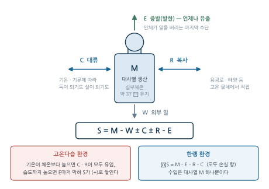
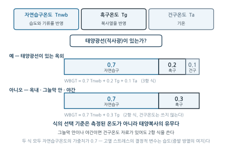
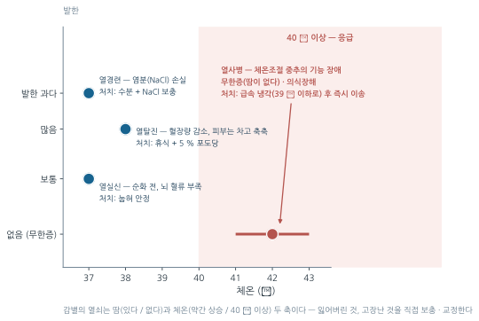
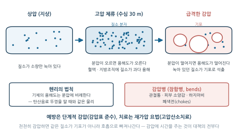
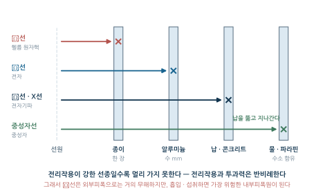
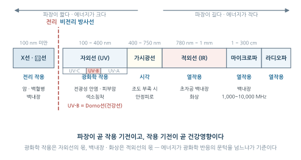
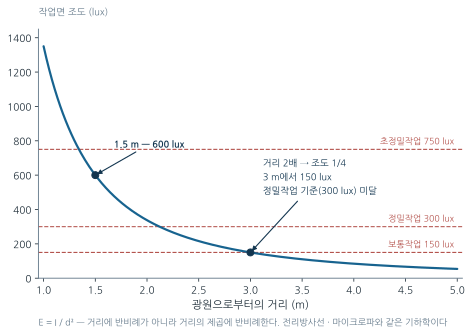

7주차. 물리적 유해인자 II — 온열·이상기압·방사선·조명
열평형과 WBGT, 고열장해와 순화, 한랭장해, 고압·저압 환경과 감압병, 전리방사선의 단위와 방호 3원칙, 비전리방사선의 파장별 건강영향, 조명
학습목표
이 주를 학습한 후 여러분은 다음을 할 수 있어야 합니다:
- 인체의 열평형 방정식과 온열환경 4요소를 설명하고, 온열지수들이 각각 어떤 요소를 반영하는지 비교할 수 있다
- 옥내·옥외 조건에 맞는 WBGT를 계산하고 작업강도별 기준과 비교하여 판정할 수 있다
- 고열장해(열사병·열탈진·열경련 등)를 원인·증상·처치로 감별하고 고온순화의 생리적 변화를 설명할 수 있다
- 한랭장해(동상·참호족·전신체온강하)를 기전으로 구분하고 예방 원칙을 설명할 수 있다
- 고압 환경의 건강장해와 감압병의 기전(헨리의 법칙)·예방·치료, 저압 환경의 저산소증을 설명할 수 있다
- 전리방사선의 단위(Bq·Gy·Sv)를 구분하고, 확률적 영향과 결정적 영향의 차이 및 방호 3원칙(시간·거리·차폐)을 적용할 수 있다
- 비전리방사선(자외선·가시광선·적외선·마이크로파·레이저)의 파장대와 표적기관, 대표 건강영향을 연결할 수 있다
- 작업면 조도 기준을 알고 채광·조명 방식의 기본 원칙을 설명할 수 있다
6주차에서 다룬 소음·진동에 이어, 이번 주는 나머지 물리적 유해인자 — 온열환경, 이상기압, 방사선, 조명 — 를 다룬다. 이들 인자를 관통하는 공통 원리가 하나 있다. 물리량(온도, 압력, 선량, 조도)을 측정하고 기준과 비교한다는 것, 그리고 여러 인자에서 에너지가 거리의 제곱에 반비례하여 묽어진다(역제곱법칙)는 것이다.
1. 인체의 열평형 · 온열지수의 체계 · WBGT의 산출
1.1 인체의 열평형
사람의 심부체온은 약 37 ℃로 일정하게 유지되어야 한다. 인체는 대사로 끊임없이 열을 만들면서, 대류·복사·증발로 환경과 열을 주고받는다. 이 수지를 열평형 방정식으로 쓴다.
\[ S = M - W \pm C \pm R - E \]
- \(S\): 체내 축적 열량 (열평형이면 \(S \approx 0\))
- \(M\): 대사열 생산, \(W\): 외부 일
- \(C\): 대류에 의한 열교환, \(R\): 복사에 의한 열교환 (환경에 따라 득이 되기도, 실이 되기도 한다)
- \(E\): 증발(발한)에 의한 열손실 — 인체가 열을 버리는 마지막 수단

그림 8.1 에서 화살표의 방향을 눈여겨보자. 증발(\(E\))만 화살표가 한 방향이다 — 땀은 열을 버리기만 할 뿐 받아들이지 않는다. 대류와 복사는 환경 조건에 따라 방향이 뒤집히므로 양방향 화살표로 그린다. 이 비대칭이 §2.2 고열장해의 기전을 그대로 설명한다.
생체와 환경 사이의 열교환에 영향을 미치는 환경 요소는 기온·기습·기류·복사열의 네 가지다. 기압은 여기에 포함되지 않는다 — 기압은 열교환이 아니라 §4의 이상기압 장해를 일으키는 별개의 물리량이다.
| 요소 | 열교환에서의 역할 |
|---|---|
| 기온 | 대류 열교환의 방향과 크기를 결정 |
| 기습 | 높을수록 증발(발한)에 의한 방열이 막힌다 |
| 기류 | 대류와 증발을 촉진 |
| 복사열 | 고온 물체(용광로, 태양)로부터 직접 받는 열 |
고온다습 환경이 특히 위험한 이유가 이 식에서 바로 나온다. 기온이 체온보다 높으면 대류·복사가 모두 열을 주는 방향이 되고, 습도까지 높으면 마지막 남은 방열 수단인 증발(\(E\))마저 막혀 \(S\)가 양(+)으로 쌓인다.
1.2 온열지수의 체계
네 요소를 하나의 숫자로 요약하려는 시도가 여러 온열지수를 낳았다. 지수마다 반영하는 요소가 다르므로, “어떤 요소가 빠져 있는가”를 아는 것이 지수 이해의 출발점이다.
| 지수 | 반영 요소 | 특징 |
|---|---|---|
| WBGT (습구흑구온도지수) | 자연습구온도·흑구온도(·건구온도) | 국내 고열 노출기준의 공식 지표. 기류는 직접 변수가 아니고 자연습구온도에 간접 반영 |
| 감각온도 (실효온도, ET) | 기온·기습·기류 | 복사열을 반영하지 못함. “실감온도”라고도 함 |
| 수정감각온도 (CET) | 기온·기습·기류·복사열 | 감각온도에 복사열을 보완 |
| Oxford 지수 (WD) | 습구·건구온도 | \(0.85W + 0.15D\) — 가중치가 습구 쪽에 크게 쏠림 |
| 불쾌지수 (DI) | 건구·습구온도 | \(0.72(D+W)+40.6\) (℃). 생활환경 지표로, 고열 스트레스 평가지수가 아님 |
| P4SR (4시간 발한 예측치) | 4요소 + 착의상태·작업량 | 노모그램으로 산정, 고온작업자의 생리상태를 잘 반영 |
| 열압박지수 (HSI) | 온도·습도·공기 속도 | 요구 증발량/최대 증발능력의 비. 작업·휴식시간 산출 가능 |
WBGT 산출식에는 기류가 직접 변수로 들어가지 않으며(자연습구온도에 간접 반영), 작업대사량도 산출식의 변수가 아니다 — 작업강도는 산출된 WBGT를 기준표와 비교해 판정할 때 쓰인다. “무엇으로 계산하는가”와 “무엇으로 판정하는가”의 구분이다. 한편 감각온도(실효온도)는 복사를 반영하지 못하므로, 복사열이 지배적인 작업장 (용광로 앞)을 감각온도로 평가하면 위험을 과소평가한다. 어떤 단일 지수도 네 요소와 대사열·착의량을 모두 담지 못하므로, 지수들은 대체가 아니라 보완 관계다.
1.3 WBGT의 산출
WBGT(Wet Bulb Globe Temperature)는 세 가지 온도계를 조합한다.
- \(T_{nwb}\): 자연습구온도 — 습도와 기류를 반영
- \(T_g\): 흑구온도 — 흑색 구 내부의 온도로 복사열을 반영
- \(T_a\): 건구온도 — 기온
태양광선(직사 복사)의 유무에 따라 두 가지 식을 쓴다.
| 상황 | 적용 식 | 사용하는 온도 |
|---|---|---|
| 옥내, 또는 태양광선이 없는 옥외(그늘막 내, 야간) | \(\text{WBGT} = 0.7\,T_{nwb} + 0.3\,T_{g}\) | 자연습구·흑구 2개 |
| 태양광선이 있는 옥외 | \(\text{WBGT} = 0.7\,T_{nwb} + 0.2\,T_{g} + 0.1\,T_{a}\) | 자연습구·흑구·건구 3개 |

건구온도가 측정되어 있다고 해서 3항 식을 쓰는 것이 아니다. 그늘막 안이나 야간처럼 태양복사가 없으면 건구온도 자료가 있어도 2항 식을 쓰고 건구온도는 사용하지 않는다. 그림 8.2 의 가중치 막대에서 자연습구온도가 두 식 모두 전체의 70 %를 차지한다는 점에 주목하자 — 고열 스트레스에서 가장 결정적인 변수는 습도(증발 방열의 여지)라는 뜻이다. 태양복사가 있으면 흑구의 0.3 중 0.1이 건구로 옮겨 갈 뿐, 자연습구의 0.7은 움직이지 않는다.
그늘막 내에서 자연습구온도 25 ℃, 건구온도 32 ℃, 흑구온도 20 ℃를 측정하였다. WBGT는?
태양광선이 내리쬐는 옥외에서 자연습구온도 22 ℃, 흑구온도 35 ℃, 건구온도 25 ℃를 측정하였다. WBGT는?
(1) 그늘막 내 = 태양광선 없음 → 2항 식. 건구온도 32 ℃는 사용하지 않는다.
\[ \text{WBGT} = 0.7 \times 25 + 0.3 \times 20 = 17.5 + 6.0 = 23.5\ ^\circ\text{C} \]
(2) 태양광선이 있는 옥외 → 3항 식.
\[ \text{WBGT} = 0.7 \times 22 + 0.2 \times 35 + 0.1 \times 25 = 15.4 + 7.0 + 2.5 = 24.9\ ^\circ\text{C} \]
답: (1) 23.5 ℃ (2) 24.9 ℃
(1)에서 실수로 3항 식을 쓰면 \(0.7\times25+0.2\times20+0.1\times32=24.7\) ℃로, 그럴듯하지만 틀린 값이 나온다. 식의 선택이 계산보다 먼저다.
2. 작업강도별 고열 노출기준 · 고열장해(열중증)의 감별
2.1 작업강도별 고열 노출기준
산출한 WBGT는 작업강도와 작업·휴식시간비에 따른 기준값과 비교하여 판정한다.
| 작업강도 | 대사열량 (kcal/h) | 계속작업 | 75% 작업 + 25% 휴식 | 50% 작업 + 50% 휴식 |
|---|---|---|---|---|
| 경작업 | 100~200 | 30.0 ℃ | 30.6 ℃ | 31.4 ℃ |
| 중등작업 | 200~350 | 26.7 ℃ | 28.0 ℃ | 29.4 ℃ |
| 중작업 | 350~500 | 25.0 ℃ | 25.9 ℃ | 27.9 ℃ |
표를 읽는 방향이 곧 원리다. 기준값은 작업강도가 무거울수록 낮아지고(대사열 \(M\)이 크므로 환경에서 받아도 되는 열이 줄어든다), 휴식 비율이 커질수록 높아진다(회복 시간이 있으므로 더 더운 환경도 견딜 수 있다). 뒤집어 말하면, WBGT가 높을수록 더 많은 휴식시간이 필요하다 — WBGT는 고온 작업장의 작업·휴식시간비를 결정하는 지표다. 표기 단위는 섭씨(℃)다.
어느 공장 실내에서 자연습구온도 28 ℃, 흑구온도 35 ℃를 측정했다. 이 작업장에서 중등작업(200~350 kcal/h)을 계속작업으로 수행할 수 있는가?
실내이므로 2항 식을 적용한다.
\[ \text{WBGT} = 0.7 \times 28 + 0.3 \times 35 = 19.6 + 10.5 = 30.1\ ^\circ\text{C} \]
중등작업·계속작업의 기준값은 26.7 ℃이다. \(30.1 > 26.7\)이므로 노출기준 초과 — 계속작업은 불가하다. 표 표 8.4 에서 30.1 ℃는 50% 작업 + 50% 휴식 기준(29.4 ℃)조차 초과하므로, 작업·휴식시간비 조정만으로는 부족하고 복사열 차폐·국소냉방 등 공학적 개선을 병행해야 한다.
2.2 고열장해(열중증)의 감별
고열장해는 원인 → 증상 → 처치가 한 줄로 연결된다. 특히 원인 기전이 다르면 처치가 정반대가 되므로, 기전부터 정확히 구분해야 한다.
| 질환 | 핵심 원인 | 특징적 증상 | 처치 |
|---|---|---|---|
| 열경련 (heat cramp) | 발한과다에 따른 수분·염분(NaCl) 손실 — 물만 마시고 염분을 보충하지 못할 때 | 복부·사지 근육의 강직성 동통(경련). 체온은 정상 | 수분과 NaCl 보충 (0.1% 식염수), 휴식 |
| 열탈진·열피로 (heat exhaustion) | 탈수로 혈장량 감소, 말초혈관 확장을 심박출량이 따라가지 못함 | 실신·허탈, 두통, 구역, 현기증. 땀은 많고 피부는 차고 축축, 체온은 정상~약간 상승 | 서늘한 곳에서 휴식, 5% 포도당 공급 |
| 열실신·열허탈 (heat syncope) | 순화되지 못한 상태에서 말초혈관 확장 → 말초 혈액 저류 → 뇌 혈류 부족 | 저혈압, 일시적 실신·현기증 | 눕혀 안정, 서늘한 곳으로 이동 |
| 열사병 (heat stroke) | 체온조절 중추의 기능 장애 (중추성) | 체온 41~43 ℃ 급상승, 의식장해·경련, 땀이 나지 않아 피부가 뜨겁고 건조 | 체온의 급속한 냉각 (39 ℃ 이하로), 즉시 이송 |
| 열쇠약 (heat prostration) | 고열에 의한 만성적 체력 소모 (만성 경과) | 전신 쇠약 | 영양 공급, 휴식 |
| 열발진 (heat rash) | 땀샘 폐색 | 피부 발진·가려움 — 고열 환경에서 가장 흔한 피부장해 | 피부를 시원하고 건조하게 유지 |

그림 8.3 에서 열사병만 오른쪽 아래 구석에 홀로 떨어져 있다 — 체온은 40 ℃를 넘고 땀은 없다. 나머지 세 질환은 모두 왼쪽 위(체온 정상, 땀은 있음)에 모여 있다. 현장에서 두 축만 확인하면 “즉시 냉각하고 이송할 것인가, 그늘에서 쉬게 할 것인가”가 바로 갈린다는 뜻이다.
두 질환은 현장에서 가장 자주 마주치고, 가장 혼동하기 쉽다.
- 열사병: 체온조절 중추 자체가 마비된 상태다. 발한이 정지되어 피부가 뜨겁고 건조하며, 체온이 40 ℃ 이상으로 치솟는다. 냉각이 늦어지는 만큼 다장기 손상이 진행되는 생명을 위협하는 응급상황이다 — 즉시 신고하고 냉각을 시작한다.
- 열탈진: 체온조절은 작동하고 있으나 순환 혈장량이 부족한 상태다. 땀은 많이 나고 피부는 차고 축축하며, 체온은 정상이거나 약간 높다.
처치의 논리도 기전에서 나온다. 염분 결핍(열경련)에는 염분을, 혈장량 결핍(열탈진)에는 수분·포도당을, 체온조절 마비(열사병)에는 외부 냉각을 — 잃어버린 것, 고장난 것을 직접 보충·교정하는 것이다.
3. 고온순화 (Acclimatization) · 고열 대책 · 한랭환경과 한랭장해
3.1 고온순화 (Acclimatization)
순화란 반복적인 고열 노출로 열 부담(heat strain)이 줄어드는 생리적 적응이다. 순화의 방향은 일관된다 — 땀은 더 잘 흘리되, 염분은 아끼는 쪽으로 몸이 바뀐다.
| 항목 | 순화 후 변화 |
|---|---|
| 체표면 한선(땀샘)의 수 | 증가 — 방열 능력 확대 |
| 땀 속 염분 농도 | 감소(희박해짐) — 염분 보존 |
| 알도스테론 분비 | 증가 → 염분 배설 억제 |
| 심박수 | 감소 — 같은 열부하에서 순환 부담 감소 |
| 에너지 대사량·체온 | 초기에는 증가·상승하나 이후 정상화 |
| 간기능·위액 분비 | 저하 (식욕부진·소화불량의 배경) |
- 매일 반복 노출하면 4~6일에 주로 이루어지고 12~14일에 거의 완성된다
- 하루 100분씩 노출하는 방법이 효과적이며, 하루 노출시간을 무작정 늘린다고 순화가 빨라지지는 않는다
- 순화에 가장 중요한 외부 요인은 영양과 수분 보충이다
실무적 함의: 장기 휴가 복귀자, 신규 입사자, 서늘한 지역에서 온 근로자는 순화되지 않은 상태이므로 고온작업 배치 시 별도의 순화 기간을 부여해야 한다. §2.2의 열실신이 “순화되지 못한” 근로자에게 잘 생기는 이유이기도 하다.
3.2 고열 대책
관리의 논리는 1주차의 관리 위계 그대로다 — 발생원(열원) 쪽 대책이 우선이다.
- 공학적 대책: 열원 격리·차폐, 환기·냉방, 복사열 차단. 방열복·차단판의 표면에는 복사열 반사효과가 큰 알루미늄을 사용한다(차단판은 양면 알루미늄이 최적)
- 관리적 대책: 작업·휴식시간 배분(§2.1), 작업 시간대 조정, 순화 기간 부여, 시원한 음용수(10~15 ℃) 공급
- 개인 보호구: 통풍이 잘 되는 작업복, 냉각조끼, 옥외 작업 시 모자
3.3 한랭환경과 한랭장해
한랭환경의 열평형
한랭환경에서는 복사·대류·증발이 모두 열을 빼앗는 방향으로 작용한다. 고열환경의 일반형(\(S = M - W \pm C \pm R - E\))에서 \(C\)·\(R\)의 부호가 상황에 따라 바뀌던 것과 달리, 한랭환경에서는 모두 손실 항으로 고정된다.
\[ \Delta S = M - E - R - C \]
체온을 지키는 유일한 수입 항은 대사열 \(M\)뿐이다. 그래서 한랭 대책의 두 축은 손실 줄이기(보온·방풍·방수)와 생산 유지하기(움직임, 충분한 식사)가 된다. 바람은 피부 주변의 단열 공기층을 제거하여 대류 손실 \(C\)를 급격히 키운다 — 기온과 풍속을 함께 반영한 체감온도 지표가 풍랭지수(WCI)다.
1차적 한랭장해
한랭 자체가 직접 일으키는 장해다. 조직이 얼었는가가 핵심 감별점이다.
| 장해 | 기전 | 핵심 소견 |
|---|---|---|
| 동상 (frostbite) | 강렬한 한랭으로 조직이 동결 | 피부 동결은 0 ~ −2 ℃에서 발생 |
| 참호족·침수족 (trench/immersion foot) | 동결온도 이상의 냉수·습기에 장기간 노출 → 지속적 국소 산소결핍, 모세혈관 벽 손상 | 발이 젖은 채로 한랭에 오래 노출될 때. 두 질환은 발생조건·임상상이 유사 |
| 전신체온강하 (저체온증) | 장시간 한랭 노출과 체열 상실 | 급성 중증 장해. 심부온도가 37 ℃에서 26.7 ℃ 이하까지 하강 |
동상은 정도에 따라 세 단계로 나눈다(4도는 없다).
| 단계 | 소견 |
|---|---|
| 1도 | 홍반성 동상 — 혈관 확장에 의한 발적, 따갑고 가려움 |
| 2도 | 수포성 동상 — 수포를 동반한 광범위한 삼출성 염증 |
| 3도 | 괴사성 동상 — 심부조직까지 동결, 괴사·괴저 |
무엇: 동상의 세 단계를 나란히 놓은 임상 사진 — ① 1도(홍반성): 발적과 부종만 있는 손·발가락, ② 2도(수포성): 수포가 형성된 손가락, ③ 3도(괴사성): 흑색 괴사가 진행된 지단. 가능하면 같은 부위(손가락 또는 발가락)로 통일하고, 참호족(침수족)의 사진 — 얼지 않았으나 창백·부종·수포가 있는 젖은 발 — 을 한 칸 더 붙이면 “동결한 것과 동결하지 않은 것”의 대비가 완성된다.
왜: 이 절의 핵심 감별점은 조직이 얼었는가인데, 표만으로는 1도와 참호족이 임상적으로 어떻게 다른지 학생이 그려 내지 못한다. 특히 3도 괴사의 경계선이 뚜렷하다는 점, 참호족은 동결 소견 없이 광범위한 부종·창백을 보인다는 점은 사진이라야 전달된다.
출처 후보: NIOSH/CDC Cold Stress 자료 및 OSHA Cold Stress 지침 (미국 연방정부 저작물 — 퍼블릭 도메인), 미 육군 의무사령부(US Army Medical Department)의 한랭손상 교재, 위키미디어 커먼즈 “Frostbite” · “Trench foot” 항목(라이선스 개별 확인), Wellcome Collection(CC BY 4.0).
대안: 사진 확보가 어려우면 손가락 단면 모식도에 동결 깊이(표피 / 진피·수포 / 심부조직 괴사)를 단계별로 표시한 도해로 대체한다.
- 동상은 조직이 얼어야 생긴다.
- 참호족은 얼지 않는 온도에서 젖은 상태로 오래 있을 때 생기며, 원인은 동결이 아니라 지속적인 국소 산소결핍이다.
“차가운 물에 오래 담근 발”은 얼지 않았어도 병든다는 것 — 온도 하나가 아니라 온도 × 습기 × 시간의 조합이 조직 손상을 결정한다는 것이 이 구분의 개념적 핵심이다.
전신체온강하의 첫 증상은 억제하기 어려운 떨림과 냉감각이며, 진행되면 심박동이 불규칙하고 느려지며 맥박이 약해지고 혈압이 떨어진다. 떨림이 멎는 것은 회복이 아니라 체온조절 능력이 소진된 위험 신호다.
2차적 한랭장해
한랭 자체가 원인은 아니지만 한랭 노출로 유발·악화되는 질환이다.
- 레이노 현상 — 6주차에서 다룬 국소진동 장해가 한랭에서 발작적으로 악화되는 것이 대표적이다
- 선단자람증(acrocyanosis), 폐색성 혈전 등 혈관 이상
한랭 대책
| 원칙 | 이유 |
|---|---|
| 의복·구두의 습기 제거, 방수 처리된 의복 | 젖은 의복은 단열 성능을 잃고 증발 손실을 키운다 (참호족 예방) |
| 여유 있는 구두·장갑 착용 | 꼭 맞는 신발·장갑은 말초 혈류를 압박하여 오히려 동상 위험을 높인다 |
| 발과 다리를 자주 움직이기 | 대사열 생산과 말초 혈류 유지 |
| 금속 의자 사용 금지 | 금속은 열전도율이 높아 전도 손실이 크다 |
| 과도한 피로 회피, 충분한 식사 | 대사열 생산의 원료 확보 |
| 고혈압·심혈관 질환·간장 장해가 있는 사람은 한랭작업 회피 | 한랭 혈관수축 부담 |
알코올은 피부 혈관을 확장시켜 열 손실을 촉진한다. “몸이 따뜻해지는 느낌”은 심부의 열이 피부로 빠져나가고 있다는 신호일 뿐이다. 한랭작업의 따뜻한 음료는 비알코올성이어야 한다. 또 하나 — 한랭에 대한 순화는 존재하지만 고온순화보다 느려서, 고온처럼 1~2주의 순화로 뚜렷한 적응을 기대하기 어렵다.
4. 이상기압
잠수·잠함(caisson) 작업은 고압, 고지대·항공 작업은 저압 환경이다. 두 환경의 장해는 모두 “기체의 분압”이라는 하나의 물리로 설명된다.
4.1 압력의 표기 — 작용압과 절대압
수중 작업의 압력은 두 가지로 나누어 표기한다.
- 작용압(게이지압): 수심 때문에 추가로 걸리는 압력. 수면에서 0
- 절대압: 작용압에 대기압 1기압을 더한 값
물은 수심 10 m마다 약 1기압을 더한다.
\[ P_{\text{작용}} = \frac{h}{10}\ [\text{atm}], \qquad P_{\text{절대}} = 1 + \frac{h}{10}\ [\text{atm}] \qquad (h: \text{수심, m}) \]
- 잠수부가 수심 20 m에서 작업할 때의 절대압은?
- 해저 45 m에서 작업할 때의 작용압과 절대압은?
(1) \(P_{\text{절대}} = 1 + \dfrac{20}{10} = 3\) 기압
(2) \(P_{\text{작용}} = \dfrac{45}{10} = 4.5\) 기압, \(\quad P_{\text{절대}} = 1 + 4.5 = 5.5\) 기압
답: (1) 3기압 (2) 작용압 4.5기압, 절대압 5.5기압
“수심 ÷ 10 = 작용압”, “작용압 + 1 = 절대압” 두 줄이 전부지만, 대기압 1기압을 빠뜨리면 모든 값이 한 칸씩 어긋난다. 어느 압력을 묻는지 먼저 확인하는 습관을 들이자.
참고로 산업안전보건기준에 관한 규칙(이상기압 장)에서 고압작업은 잠함공법 등 압기공법으로 행하는 작업, 잠수작업은 수중에서 공기압축기나 호흡용 공기통을 이용하는 작업이며, 이때의 “압력”은 게이지압을 말한다.
4.2 고압 환경의 건강장해
고압 환경의 장해는 노출의 국면에 따라 정리된다.
| ① 가압 (내려갈 때) | ② 체류 (고압 하) | ③ 감압 (올라올 때) |
|---|---|---|
| 1차적 가압현상 — 기계적 장해 | 2차적 가압현상 — 화학적 장해 | 감압병 — 기포 형성 |
| 귀·부비동 스퀴즈 | 질소마취 · 산소중독 · CO₂ 중독 | 관절통, 피부 소양감, 하지마비, 폐색전 |
1차적 가압현상은 압력 자체에 의한 기계적 장해다. 가압 시 부비동·중이의 압력 평형이 실패하면 스퀴즈(squeeze) — 귀·부비동의 통증이 생긴다.
2차적 가압현상은 고분압이 된 기체의 화학적·생리적 작용이다.
| 기체 | 발생 조건 | 증상 |
|---|---|---|
| 질소 (N₂) | 4기압 이상 | 질소마취 — 다행증(euphoria), 판단력·작업능력 저하 |
| 산소 (O₂) | 산소분압 2기압 초과 | 산소중독 — 경련, 폐부종, 시야 협착 |
| 이산화탄소 (CO₂) | 대기압 환산 농도 0.2% 초과 | 두통·호흡곤란. 산소중독과 질소마취를 악화시킴 |
2차적 가압현상의 3요소는 질소마취·산소중독·이산화탄소 중독이다. 평상시 무해한 공기의 성분들이 분압이 높아지는 것만으로 독성을 띠게 된다는 것이 개념의 핵심이다(같은 기체, 다른 분압, 다른 독성).
- 일산화탄소(CO) 중독은 분압과 무관한 화학적 질식(5주차)으로, 여기에 속하지 않는다.
- 공기전색(air embolism)은 감압 과정에서 기포가 혈관을 막는 장해로, 가압 중의 화학적 장해와 발생 시점 자체가 다르다.
- 산소중독은 노출이 중지되면 회복되는 가역적 장해이며 후유증을 남기지 않는다. 다만 운동이나 이산화탄소의 존재로 악화되므로, 고압환경의 CO₂ 관리는 산소중독 예방과 직결된다.
4.3 감압병 (Decompression Sickness)
고압 환경 장해의 대표는 감압병(잠함병, bends)이다. 기전은 헨리의 법칙 — 기체의 용해도는 분압에 비례한다 — 하나로 설명된다.

그림 8.4 의 세 칸에서 질소의 총량은 거의 변하지 않는다 — 달라지는 것은 그것이 녹아 있는가(작은 점) 기포로 뭉쳐 있는가(큰 방울)뿐이다. 감압병의 대책이 “질소를 없애는 것”이 아니라 “기포가 되기 전에 호흡으로 내보낼 시간을 주는 것”인 이유가 여기 있다.
- 증상: 관절통(bends), 피부 소양감, 척수 침범 시 하지마비, 폐혈관 침범 시 폐색전(chokes)
- 예방
- 단계적 감압(감압표 준수) — 가장 중요하다. 녹은 질소를 기포가 아닌 호흡으로 서서히 내보낼 시간을 주는 것이다
- 감압 중 산소 호흡으로 질소 배출 촉진
- 헬륨-산소 혼합가스 사용 — 헬륨은 질소보다 지방 용해도가 낮아 마취·감압병 위험이 적다
- 작업 후 비행기 탑승·고지대 이동 금지 — 고도 상승은 추가 감압에 해당한다
- 치료: 재가압 요법(고압산소치료) — 챔버에서 다시 가압해 기포를 녹인 뒤 서서히 감압한다
4.4 저압 환경의 건강장해
고지대 작업·항공 업무의 근본 문제는 산소분압 저하에 따른 저산소증(hypoxia)이다.
| 고도 | 영향 |
|---|---|
| 2,000 m 이상 | 경도 저산소증, 야간시력 저하 |
| 3,000 m 이상 | 급성 고산병 — 두통, 구역, 불면 |
| 5,000 m 이상 | 판단력 저하, 의식 장해 |
| 8,000 m 이상 | 산소 공급 없이는 생존 곤란 |
임상적으로는 두 질환이 대비된다.
| 항목 | 급성고산병 (AMS) | 고공성 폐수종 (HAPE) |
|---|---|---|
| 주요 증상 | 두통, 식욕상실, 우울 — 가장 특징적인 것은 흥분성 | 진행성 기침과 호흡곤란, 폐 수포음, 폐동맥압 상승 |
| 호발 대상 | 고도에 순화되지 않은 사람 | 어른보다 어린이에게 많고, 고공에 순화된 사람이 해면으로 복귀할 때도 발생 |
| 경과 | 48시간 내 최고조 → 2~3일이면 소실 | 산소 공급·해면 귀환으로 급속히 소실 |
예방의 원칙은 고온순화와 같은 논리다 — 점진적 순화(고도 적응), 산소 공급, 작업시간 제한, 그리고 심폐질환자의 배치 전 선별(건강진단)이다.
5. 전리방사선
5.1 종류와 투과력
전리방사선(ionizing radiation)은 물질을 통과하면서 원자로부터 전자를 떼어내 이온을 만들 수 있을 만큼 에너지가 큰 방사선이다.
| 종류 | 실체 | 전리작용 | 투과력 | 차폐재 |
|---|---|---|---|---|
| α선 | 헬륨 원자핵 (\(^4_2\)He) | 매우 강함 | 매우 약함 | 종이 한 장 |
| β선 | 전자 | 중간 | 약함 | 알루미늄 수 mm |
| γ선·X선 | 전자기파 | 약함 | 매우 강함 | 납, 콘크리트 |
| 중성자선 | 중성자 | 간접 전리 | 매우 강함 | 물, 파라핀 (수소 함유 물질) |

그림 8.5 에서 중성자선만 납을 뚫고 지나간다는 점이 이 그림의 실무적 핵심이다. “방사선 차폐 = 납”이라는 통념이 통하지 않는 유일한 선종이며, 수소를 많이 함유한 물·파라핀이라야 막힌다(§5.4).
에너지를 좁은 구간에 집중적으로 내려놓는 선종(α선)은 전리작용이 강한 대신 멀리 가지 못하고, 물질과 잘 반응하지 않는 선종(γ선)은 깊이 뚫고 들어간다. 이 반비례가 방호 전략을 둘로 가른다.
- α선: 공기 중 수 cm밖에 못 가므로 외부피폭으로는 거의 무해하다. 그러나 흡입·섭취로 체내에 들어오면 가장 위험한 내부피폭원이 된다 (라돈, 플루토늄)
- γ선: 투과력이 커서 외부피폭의 주 대상이다
그래서 방사선 방호는 외부피폭 방어(§5.4의 3원칙)와 내부피폭 방어(밀폐·격리, 음압 환기, 보호구, 오염관리, 섭취 금지 — 체내 유입 자체의 차단)를 나누어 접근한다.
5.2 방사선의 단위 — Bq, Gy, Sv
| 물리량 | 단위 | 정의 | 구 단위 |
|---|---|---|---|
| 방사능 | 베크렐 (Bq) | 초당 붕괴수 (1 Bq = 1 dps) | 큐리(Ci), \(1\ \text{Ci}=3.7\times10^{10}\) Bq |
| 흡수선량 | 그레이 (Gy) | 물질 1 kg이 흡수한 에너지 (J/kg) | 라드(rad), 1 Gy = 100 rad |
| 등가선량 | 시버트 (Sv) | 흡수선량 × 방사선가중치 \(w_R\) | 렘(rem), 1 Sv = 100 rem |
| 유효선량 | 시버트 (Sv) | 등가선량 × 조직가중치 \(w_T\)의 합 | — |
\[ H_T = \sum_R w_R \cdot D_{T,R} \qquad\qquad E = \sum_T w_T \cdot H_T \]
방사선가중치 \(w_R\)은 γ선·X선·β선 = 1, 중성자 = 5~20(에너지별), α선 = 20이다.
- Bq는 선원이 얼마나 활발한가 — 방출하는 쪽
- Gy는 물질이 에너지를 얼마나 받았는가 — 받는 쪽의 물리량
- Sv는 그 에너지가 인체에 얼마나 해로운가 — 생물학적 영향
같은 1 Gy라도 α선은 γ선보다 20배 해롭다(\(w_R = 20\)). 물리량(Gy)만으로는 건강 위험을 말할 수 없기에 Sv가 별도로 필요하다. §5.1의 “α선은 전리작용이 가장 강하다”는 성질이 가중치 20으로 그대로 이어지는 것이다.
구 단위 체계에서 이 역할을 하던 것이 RBE(상대적 생물학적 효과비)다 (\(\text{rem} = \text{rad} \times \text{RBE}\)). RBE는 선량이 아니라 무차원 계수이며, 크기 순서는 전리작용 순서 그대로 \(\alpha > \beta > \gamma \approx \text{X선}\)이다.
5.3 인체 영향 — 확률적 영향과 결정적 영향
전리방사선의 건강영향은 선량-반응의 형태에 따라 두 범주로 나뉜다. 이 구분은 방호 철학 전체를 결정하는, 이 절에서 가장 중요한 개념이다.
| 구분 | 결정적 영향 (확정적 영향) | 확률적 영향 |
|---|---|---|
| 역치 | 있음 — 역치 미만에서는 발생하지 않음 | 없음 — 아무리 낮아도 위험이 0이 아님 |
| 선량과의 관계 | 선량이 클수록 중증도가 커짐 | 선량이 클수록 발생 확률이 커짐 (중증도는 무관) |
| 예 | 피부홍반, 탈모, 백내장, 불임, 급성방사선증후군 | 암, 유전적 영향 |
| 방호 목표 | 역치 미만으로 유지하여 발생 자체를 방지 | 확률을 합리적으로 가능한 한 낮게 (ALARA) |
방사선 감수성은 세포분열이 활발하고 미분화된 조직일수록 높다 (Bergonié-Tribondeau 법칙).
\[ \text{골수·생식선·림프조직} > \text{장상피} > \text{피부} > \text{근육} > \text{신경·골} \]
5.4 선량한도와 방호 3원칙
원자력안전법상 방사선작업종사자의 선량한도는 다음과 같다.
| 구분 | 선량한도 |
|---|---|
| 유효선량 | 연간 50 mSv를 넘지 않는 범위에서 5년간 100 mSv |
| 수정체 등가선량 | 연간 50 mSv, 5년간 100 mSv |
| 손·발·피부 등가선량 | 연간 500 mSv |
| 일반인 유효선량 | 연간 1 mSv |
\[ \boxed{\textbf{시간(Time)} \quad\cdot\quad \textbf{거리(Distance)} \quad\cdot\quad \textbf{차폐(Shielding)}} \]
- 시간 — 피폭선량은 작업시간에 정비례한다. 모형으로 예행연습을 하여 실제 작업시간을 줄인다
- 거리 — 선량률은 거리의 제곱에 반비례한다(역제곱법칙). 원격조작 기구를 사용한다 \[ I_2 = I_1 \left(\frac{r_1}{r_2}\right)^2 \]
- 차폐 — 선종에 맞는 차폐재를 고른다. γ선은 원자번호가 크고 밀도가 높은 납·콘크리트, 중성자선은 반대로 수소를 많이 함유한 물·파라핀이 효과적이다
여기에 ALARA 원칙(As Low As Reasonably Achievable)이 얹힌다. 선량한도 이하라도 “합리적으로 달성 가능한 한 낮게” 피폭을 유지해야 한다 — 확률적 영향에는 역치가 없다는 §5.3의 전제에서 논리적으로 따라 나오는 원칙이다.
방사선원으로부터 1 m 지점의 선량률이 400 mSv/h이다. (1) 작업자를 4 m 지점에 배치하면 선량률은? (2) 이 지점에서 15분간 작업할 때의 피폭선량은?
(1) 역제곱법칙:
\[ I_2 = 400 \times \left(\frac{1}{4}\right)^2 = 400 \times \frac{1}{16} = 25\ \text{mSv/h} \]
(2) 15분 = 0.25 h이므로
\[ 25\ \text{mSv/h} \times 0.25\ \text{h} = 6.25\ \text{mSv} \]
답: (1) 25 mSv/h (2) 6.25 mSv
거리를 4배로 늘린 것만으로 선량률이 1/16이 되었다. 거리는 가장 비용이 적게 드는 방호수단이다. 이 계산 구조(선량률 × 시간 = 선량)에 3원칙 중 “시간”과 “거리”가 모두 들어 있음을 확인하자.
6. 비전리방사선
비전리방사선은 물질을 이온화시킬 만큼의 에너지를 갖지 못하는 전자기파다. 전자기파 스펙트럼에서 파장이 긴 쪽(에너지가 낮은 쪽)에 위치하며, 주된 작용은 전리가 아니라 광화학 반응(짧은 파장 쪽)과 열작용(긴 파장 쪽)이다.

파장이 곧 작용 기전이고, 작용 기전이 곧 건강영향이다. 이 절의 목표는 파장대 — 작용 — 표적기관 — 대표 장해를 한 줄로 연결하는 것이며, 그림 8.6 이 그 한 줄을 세로로 세워 놓은 그림이다. 위에서 아래로 파장 → 이름 → 작용 → 건강영향의 순서로 읽으면 된다.
6.1 자외선 (UV, 100~400 nm)
자외선은 여러 물질에 화학변화를 일으키므로 화학선이라고도 한다. 생물학적 영향에 따라 세 영역으로 나눈다.
| 구분 | 파장 | 주된 영향 |
|---|---|---|
| UV-A | 315~400 nm | 색소침착 |
| UV-B | 280~315 nm | 홍반·피부암, 비타민 D 형성, 소독작용 |
| UV-C | 100~280 nm | 살균 (254~280 nm에서 핵단백 파괴) |
280~315 nm(2,800~3,150 Å) 영역의 자외선은 살균작용·비타민 D 형성·피부 색소침착 등 생물학적 작용이 가장 강해 건강선(Dorno선)이라 부른다. UV-B 영역과 사실상 같으며, 안전보건에서 가장 관심을 두는 대역이다. (1 nm = 10 Å이므로 두 표기는 즉시 환산된다.)
자외선의 생체작용
| 부위 | 작용 |
|---|---|
| 눈 | 전광성(전기성) 안염 = 급성 각막염 — 전기용접의 대표 장해. 눈에 대한 영향은 270 nm 부근에서 가장 크다. 장기적으로는 백내장 위험 |
| 피부 | 홍반 → 색소침착 (홍반작용 최강 파장은 297 nm 부근), 표피·진피 비후, 280~320 nm에서 피부암 |
| 전신 | 대사 항진, 적혈구·백혈구·혈소판 증가, 2차적으로 두통·흥분·피로 |
자외선이 생체조직을 통과하는 깊이는 수 mm에 불과하여 대부분 신체 표면에서 흡수된다 — 표적이 피부와 눈인 이유다. 노출기준은 단위면적당 조사 에너지(J/m²)로 나타내며 파장에 따라 달라진다.
- 자외선은 공기 중 NO₂·올레핀계 탄화수소와 광화학 반응을 일으키고, 특히 트리클로로에틸렌(TCE)을 독성이 강한 포스겐(phosgene)으로 전환시킨다. TCE 탈지작업 옆에서 아크용접을 해서는 안 되는 이유다 — 두 공정이 각각은 관리되고 있어도 나란히 두는 것만으로 새로운 유해인자가 생긴다.
- 보통유리는 자외선을 통과시키지 못한다 (석영·투과성 비닐은 통과시킨다). 창유리 너머의 햇볕으로 비타민 D가 잘 만들어지지 않는 이유이자, 유리가 간단한 자외선 차폐재가 되는 이유다.
6.2 가시광선 (400~750 nm)
사람의 눈이 밝기와 색으로 감지하는 영역이다. 가시광선의 산업위생 문제는 주로 부족에서 온다 — 조명이 부족하면 안정피로, 눈의 피로, 안구진탕증, 근시가 나타난다. 조도 기준과 조명 설계는 §7에서 다룬다.
6.3 적외선 (IR, 780 nm ~ 1 mm)
가시광선과 마이크로파 사이의 전자기파로, 열선이라고도 한다. 절대온도 0 K 이상의 모든 물체는 온도에 비례하여 적외선을 복사하며, 태양 복사에너지의 약 52%가 적외선이다.
적외선이 조직에 흡수되면 화학반응이 일어나는 것이 아니라 구성분자의 운동에너지가 증가하여 조직 온도가 오른다. 광화학 작용(색소침착, 홍반의 화학적 기전)은 자외선의 몫이고, 적외선의 장해는 모두 가열의 결과다.
이 구분 하나로 두 인자의 건강영향 목록이 깔끔하게 갈라진다 — 색소침착은 자외선, 백내장·화상은 적외선. 파장(에너지)이 광화학 반응을 일으킬 문턱을 넘느냐가 기준이다.
적외선의 생체작용
| 부위 | 작용 |
|---|---|
| 눈 | 초자공(유리공) 백내장 — 유리 가공·용광로 작업의 만성 노출로 발생하는 대표 직업병. 각막·망막 손상 |
| 피부 | 혈관 확장·혈류 증가, 심하면 홍반. 근적외선은 급성 화상 |
| 두부 | 강력한 적외선은 뇌막을 자극하여 경련을 동반한 열사병(일사병) 유발 |
무엇: 백내장으로 혼탁해진 수정체의 임상 사진. 세극등(slit lamp) 검사 사진이면 혼탁의 위치와 깊이가 드러나 가장 좋고, 육안 사진(동공이 회백색으로 보이는 상태)이 함께 있으면 대비가 된다. 정상 수정체 사진을 나란히 놓아 대조하는 구성.
왜: 적외선의 장해가 열작용의 누적 결과라는 이 절의 논지는 “수정체가 실제로 어떻게 되는가”를 보아야 실감된다. 유리 가공·용광로 작업자에게 수십 년에 걸쳐 나타나는 소견이므로 학생이 현장에서 마주칠 기회가 없고, 그림 없이는 “초자공 백내장”이 용어로만 남는다. 마이크로파(§6.4)의 표적기관도 같은 백내장이므로 한 장이 두 절에서 쓰인다.
출처 후보: NEI(미국 국립안연구소, National Eye Institute)의 백내장 이미지 (퍼블릭 도메인), NIOSH 간행물, Wellcome Collection(CC BY 4.0), 위키미디어 커먼즈 “Cataract” 항목(라이선스 개별 확인).
대안: 수정체 단면 모식도에 혼탁 부위를 음영으로 표시하고, 정상 수정체와 2단 비교하는 도해로 대체한다.
흡수는 조직의 수분 함량에 좌우되며, 1,400 nm 이상의 장파장 적외선은 1 cm의 수층을 통과하지 못한다. 노출이 많은 작업은 유리 가공(초자), 용광로·제강, 용접 등 작열된 물체를 다루는 작업이고, 대책은 노출강도·시간 제한과 차폐다 (§3.2의 알루미늄 차열판이 그것이다).
6.4 마이크로파 (1~300 cm, 10~30,000 MHz)
인체에 흡수된 마이크로파는 기본적으로 열로 전환된다. 생물학적 작용은 파장뿐 아니라 출력·노출시간·노출된 조직에 따라 다르며, 투과력도 파장에 따라 다르다.
| 표적 | 영향 |
|---|---|
| 눈 (대표 표적기관) | 백내장 — 1,000~10,000 MHz 대역, 조직 온도 상승과 관련 |
| 중추신경계 | 300~1,200 MHz에서 가장 민감 — 정서 불안정 등 |
| 혈액·혈압 | 백혈구 증가·혈소판 감소, 혈압은 초기 상승 후 저하 |
- 열작용이 대표 작용이지만, 열을 느끼지 못하는 대역이 있다. 150 MHz 이하의 마이크로파/RF는 신체에 흡수되어도 온감을 일으키지 않는다 — “뜨겁지 않으니 안전하다”는 감각이 통하지 않는 이유다.
- 에너지량은 거리의 제곱에 반비례한다 (\(I \propto 1/r^2\)). §5.4의 전리방사선 역제곱법칙과 같은 원리이며, 거리 확보가 여기서도 유효한 방호수단이 된다.
6.5 레이저 (LASER)
LASER(Light Amplification by Stimulated Emission of Radiation)는 유도방출로 특정 파장을 강력하게 증폭시킨 복사선이다. 자외선~적외선 어느 대역이든 만들 수 있다.
| 특성 | 내용 |
|---|---|
| 단색성 | 단일 파장, 극히 좁은 파장범위 |
| 지향성·집광성 | 예리한 지향성, 쉽게 산란하지 않음 |
| 간섭성 (coherence) | 위상이 고르며 간섭현상이 일어난다 |
| 에너지 밀도 | 단위 면적당 빛에너지가 매우 크다 |
이 특성들이 그대로 위험의 근원이다 — 퍼지지 않고, 좁은 면적에, 큰 에너지를 집중시키는 빛이기 때문이다.
- 표적기관은 눈(가장 민감), 다음이 피부다. 피부에 대한 작용은 가역적 (홍반·수포·색소침착)이며, 비가역적 손상의 위험은 망막·각막에 집중된다
- 맥동파(pulse wave)는 에너지를 축적했다가 한꺼번에 방출하므로 지속파보다 장해가 크다
- 노출 평가는 각막 표면에서의 조사량(J/cm²)·노출량(W/cm²)으로 하며, 눈에 대한 허용량은 파장에 따라 수정된다
레이저용 보안경의 성능은 흡광도(Optical Density, OD)로 나타낸다.
\[ \text{OD} = \log_{10}\frac{I_0}{I} \qquad (I_0: \text{입사 강도},\ I: \text{투과 강도}) \]
레이저용 보안경을 착용하였더니 4,000 mW/cm²의 레이저가 0.4 mW/cm²로 낮아졌다. 이 보안경의 흡광도(OD)는?
\[ \text{OD} = \log_{10}\frac{4000}{0.4} = \log_{10} 10{,}000 = 4 \]
답: OD = 4
OD가 1 커질 때마다 투과 강도는 1/10이 된다. OD 4는 입사 에너지를 \(10^{-4}\), 즉 1만분의 1로 줄인다는 뜻이다. 소음의 dB과 마찬가지로, 넓은 범위의 물리량을 다루는 곳에는 어김없이 로그 척도가 등장한다.
7. 조명
7.1 빛의 단위
빛의 단위는 “빛이 어디에 있는가”로 구분하면 헷갈리지 않는다 — 광원이 내는 것, 표면에 도달한 것, 표면에서 되나오는 것.
| 물리량 | 정의 | 단위 |
|---|---|---|
| 광속 (luminous flux) | 광원이 방출하는 빛의 총량 | lumen (lm) |
| 광도 (luminous intensity) | 광원이 특정 방향으로 내는 빛의 세기 | candela (cd) |
| 조도 (illuminance) | 표면에 도달하는 빛의 단위 면적당 밀도 | lux (lx) = lm/m² |
| 휘도 (luminance) | 표면에서 반사·방출되는 단위 면적당 광량 | cd/m² |
조도는 광원의 세기가 아니라 작업면의 밝기다. 점광원에 대해 조도는 광도에 비례하고 거리의 제곱에 반비례한다(역자승 법칙 — 방사선·마이크로파와 같은 기하학이다).
\[ E = \frac{I}{d^{2}} \qquad \Longrightarrow \qquad E_{2} = E_{1}\left(\frac{d_{1}}{d_{2}}\right)^{2} \]
거리가 2배가 되면 조도는 1/4이 된다 — “거리에 반비례”가 아니라 “거리의 제곱에 반비례”다.

그림 8.7 는 연습문제 6의 상황을 그대로 그린 것이다. 1.5 m에서 600 lux였던 작업면을 3 m로 옮기면 150 lux — 정밀작업의 법정 최저 조도(300 lux)에 미달한다. 조명 설계에서 광원의 밝기보다 광원과 작업면의 거리가 먼저 문제가 되는 이유이며, 국부조명이 필요한 자리가 바로 이 곡선의 오른쪽이다.
7.2 작업면 조도 기준
조도 기준에는 성격이 다른 두 층이 있다. 법정 최저 조도는 산업안전보건기준에 관한 규칙 제8조가 정한 하한선이고, 권장 조도는 작업을 편안하고 정확하게 수행하기 위해 바람직한 수준이다. 두 값이 다른 것은 모순이 아니라 기준의 성격이 다르기 때문이며, 실무에서는 법정 최저치 충족만으로는 충분하지 않다.
| 작업 구분 | 법정 최저 조도 |
|---|---|
| 초정밀작업 | 750 lux 이상 |
| 정밀작업 | 300 lux 이상 |
| 보통작업 | 150 lux 이상 |
| 작업 종류 | 권장 조도 (lx) | 예시 |
|---|---|---|
| 극정밀 작업 | 1,500~3,000 | 정밀 검사, 미세 조립 |
| 정밀 작업 | 750~1,500 | 제도, 색상 검사 |
| 중작업 | 300~750 | 일반 사무, 독서, 조립 |
| 보통 작업 | 150~300 | 컴퓨터 작업, 단순 조립 |
| 통로·계단 | 50~100 | 이동 공간 |
조도는 조도계(lux meter)로 측정한다 — 광전지를 작업면에 수평으로 놓고, 측정자의 그림자가 광전지에 드리우지 않도록 한다.
7.3 채광과 조명 방식
채광(자연조명)은 창을 통해 태양광을 이용하는 것이다. 자연광은 질이 좋지만 시간·날씨에 따라 변동이 크고, 창에서 들어오는 직사휘광이 문제를 일으킬 수 있다. 창문 휘광 대책은 ① 창문을 높이 달고, ② 차양이나 블라인드를 쓰며, ③ 옥외 창 위에 드리우개(overhang)를 설치하는 것이다.
인공조명의 방식은 빛을 어디에 어떻게 배분하는가로 나뉜다.
| 방식 | 내용 | 특징 |
|---|---|---|
| 전반조명 | 실내 전체를 일률적으로 밝힘 | 조도가 균일하여 눈의 피로가 적고 사고·재해가 줄어든다 |
| 국부조명 | 특정 작업 위치만 밝힘 | 필요한 곳에 높은 조도를 경제적으로 공급. 단독 사용 시 명암 대비가 커짐 |
| 직접조명 | 빛을 작업면으로 직접 비춤 | 효율이 높으나 눈부심·그림자가 생기기 쉬움 |
| 간접조명 | 천장·벽에 반사시켜 비춤 | 부드럽고 균일하나 효율이 낮음 — 천장·벽의 반사율이 중요 |
설계의 원칙은 다음과 같다.
- 빛은 작업장 전체에 골고루: 정밀 작업에서도 국부조명 단독이 아니라 전반조명 + 국부조명의 이원화가 기본이다. 작업면과 주변의 조도 비율(휘도비)은 3:1 이내로 유지한다 — “밝을수록 좋다”가 아니라 균일할수록 좋다가 원칙이다
- 눈부심(glare) 방지: 직접 눈부심은 광원의 휘도를 줄이고 수를 늘리며, 광원을 시선에서 멀리 두고, 가리개·갓·차양으로 가린다. 휘광원 주위를 밝게 하여 휘도비를 줄이는 것도 대책이다. 반사 눈부심은 무광택 표면과 조명 위치 조정으로 막는다 — 반사광은 세밀한 작업에 도움이 되는 것이 아니라 방해가 된다
- 실내면의 반사율: 위에서 아래로 갈수록 낮게 한다
\[ \boxed{\ \text{천장} > \text{벽} > \text{가구} > \text{바닥}\ } \]
천장을 어둡게 하면 간접조명의 효율이 떨어지고, 바닥을 지나치게 밝게 하면 반사 눈부심이 생긴다(바닥의 추천 반사율은 20~40%).
VDT(영상표시단말기) 작업은 별도의 관리가 필요하다 — 조도 300~700 lx, 화면 반사 방지, 연속 1시간 작업 시 10~15분 휴식. 자세한 인간공학적 설계는 12주차에서 다룬다.
요약
| 유해인자 | 핵심 물리량 | 핵심 공식/원리 | 대표 건강장해 | 우선 대책 |
|---|---|---|---|---|
| 고열 | WBGT (℃) | \(0.7T_{nwb}+0.3T_g\) (옥내) \(0.7T_{nwb}+0.2T_g+0.1T_a\) (옥외) |
열경련·열탈진·열사병 (처치: 염분/포도당/냉각) | 작업·휴식 배분, 순화, 차열·냉방 |
| 한랭 | 기온·풍속 (WCI) | \(\Delta S = M-E-R-C\) | 동상(동결), 참호족(습윤·산소결핍), 저체온증 | 보온·방수, 습기 제거, 여유 있는 보호구 |
| 고압 | 절대압 (atm) | \(P_{절대}=1+h/10\), 헨리의 법칙 | 감압병, 질소마취(4기압)·산소중독(2기압) | 단계적 감압, 재가압 치료 |
| 저압 | 산소분압 | — | 급성고산병, 고공성 폐수종 | 점진적 순화, 산소 공급 |
| 전리방사선 | 유효선량 (Sv) | \(I_2=I_1(r_1/r_2)^2\) | 암(확률적·역치 없음), 백내장·불임(결정적·역치 있음) | 시간·거리·차폐, ALARA |
| 자외선 | 파장 (nm), J/m² | Dorno선 280~315 nm | 전광성 안염, 피부암, 색소침착 | 차광보안경, 차폐(보통유리) |
| 적외선 | 파장 780 nm~1 mm | 열작용 (광화학 작용 아님) | 초자공 백내장, 화상 | 알루미늄 차열판, 노출시간 제한 |
| 마이크로파 | 주파수 (MHz) | \(I \propto 1/r^2\) | 백내장 (1,000~10,000 MHz) | 거리 확보, 차폐 |
| 레이저 | 조사량 (J/cm²) | \(\text{OD}=\log_{10}(I_0/I)\) | 눈(망막·각막) 손상 | 보안경(OD), 광로 차폐 |
| 조명 | 조도 (lux) | \(E = I/d^2\) | 안정피로, 안구진탕증 | 법정 최저 조도(750/300/150), 전반+국부, 눈부심 방지 |
세 가지 관통 원리를 다시 확인하자. ① 에너지는 거리의 제곱에 반비례한다 (전리방사선·마이크로파·조도) — 거리가 공통의 관리수단인 이유다. ② 물리량이 건강영향의 종류를 결정한다 — 같은 질소도 4기압에서는 마취제가 되고, 같은 전자기파도 파장에 따라 광화학 작용과 열작용으로 갈린다. ③ 역치의 유무가 방호 철학을 가른다 — 역치가 있는 영향은 기준 미만 유지로 막고, 역치가 없는 영향(발암)은 ALARA로 최소화한다.
연습문제
문제 1. WBGT 산출과 판정
옥외의 조선소 갑판(태양광선이 내리쬐는 곳)에서 자연습구온도 27 ℃, 흑구온도 40 ℃, 건구온도 33 ℃를 측정했다.
- 이 지점의 WBGT를 계산하라.
- 이 곳에서 중등작업(200~350 kcal/h)을 수행한다면, 계속작업이 가능한가? 가능하지 않다면 어떤 작업·휴식 조건이 필요한지 표 8.4 로 판단하라.
정답 및 해설
a. 태양광선이 있는 옥외이므로 3항 식을 쓴다.
\[ \text{WBGT} = 0.7 \times 27 + 0.2 \times 40 + 0.1 \times 33 = 18.9 + 8.0 + 3.3 = 30.2\ ^\circ\text{C} \]
b. 중등작업 계속작업 기준은 26.7 ℃, 75% 작업 기준은 28.0 ℃, 50% 작업 기준은 29.4 ℃다. 30.2 ℃는 세 값을 모두 초과하므로 작업·휴식시간비 조정만으로는 기준을 만족할 수 없다. 복사열 차폐(차열판), 작업 시간대 조정(아침·저녁), 국소냉방 등 공학적·관리적 개선을 병행해야 한다.문제 2. 고열장해의 감별
폭염 속 옥외 작업장에서 두 근로자가 쓰러졌다.
- 근로자 A: 땀을 많이 흘리고 있고 피부가 차고 축축하다. 두통과 어지러움을 호소하며 체온은 37.8 ℃다.
- 근로자 B: 피부가 뜨겁고 건조하며 땀이 나지 않는다. 의식이 혼미하고 체온은 41.5 ℃다.
각각의 질환명과 발생 기전, 처치를 쓰고, 두 처치를 서로 바꾸면 왜 위험한지 설명하라.
정답 및 해설
- A — 열탈진(열피로): 과도한 발한으로 탈수·혈장량이 감소하여 순환이 부족해진 상태다. 체온조절(발한)은 작동 중이다. 처치는 서늘한 곳에서의 휴식과 수분 보충(5% 포도당)이다.
- B — 열사병: 체온조절 중추의 기능 장애로 발한이 정지되고 체온이 급상승한 상태다. 처치는 즉각적인 급속 냉각(체온 39 ℃ 이하로)과 신속한 이송이다.
처치를 바꾸면: 열사병 환자에게 수분만 공급하며 냉각을 지연시키면 중추가 마비된 상태라 체온이 계속 올라 다장기 손상으로 진행한다(열사병은 시간이 곧 예후다). 반대로 열탈진 환자를 얼음물에 담그면 체온이 크게 높지 않은 상태에서 저체온 부담만 주고, 원인인 혈장량 결핍은 교정되지 않는다.
감별의 열쇠: 땀(있다/없다)과 체온(약간 상승/40 ℃ 이상).문제 3. 이상기압
잠함 공법으로 해저 30 m 지점에서 작업하는 근로자가 있다.
- 이 작업 지점의 작용압과 절대압을 구하라.
- 이 근로자가 급하게 상승한 뒤 관절통과 피부 소양감을 호소한다. 질환명과 발생 기전(관련 법칙 포함), 응급조치를 서술하라.
- 이 근로자가 증상 완화 후 당일 비행기로 이동하는 것이 위험한 이유를 설명하라.
정답 및 해설
a. \(P_{\text{작용}} = 30/10 = 3\) 기압, \(P_{\text{절대}} = 1 + 3 = 4\) 기압
b. 감압병(잠함병). 고압환경에서 헨리의 법칙(기체 용해도는 분압에 비례)에 따라 질소가 혈액·지방조직에 과다 용해되고, 급격한 감압으로 용해도가 급락하면서 질소가 기포로 석출되어 혈관을 폐색하고 조직을 압박한다. 응급조치는 ① 100% 산소 흡입(질소 배출 촉진), ② 눕히고 보온·수분 공급, ③ 재가압 요법(고압산소치료)이 가능한 의료기관으로 신속 이송이다.
c. 고도 상승은 기압 저하, 곧 추가 감압에 해당한다. 조직에 남아 있는 질소가 다시 기포화되어 증상이 재발·악화될 수 있으므로 작업 후 비행기 탑승과 고지대 이동은 금지된다.문제 4. 방사선 방호의 정량 적용
γ선원에서 2 m 떨어진 지점의 선량률이 90 mSv/h이다.
- 작업 위치를 6 m로 옮기면 선량률은 얼마가 되는가?
- 1회 작업의 피폭을 5 mSv 이하로 제한하려면 6 m 지점에서 최대 몇 분간 작업할 수 있는가?
- 거리 외에 적용할 수 있는 외부피폭 방호수단 두 가지를 원리와 함께 쓰라. (이 선원이 중성자선원이라면 차폐재 선택이 어떻게 달라지는가?)
정답 및 해설
a. 역제곱법칙: \(I_2 = 90 \times (2/6)^2 = 90 \times 1/9 = 10\ \text{mSv/h}\)
b. \(t = 5\ \text{mSv} \div 10\ \text{mSv/h} = 0.5\ \text{h} =\) 30분
c. - 시간: 피폭선량 = 선량률 × 시간으로 작업시간에 정비례하므로, 모형 예행연습으로 실작업 시간을 최소화한다. - 차폐: 선원과 작업자 사이에 차폐체를 두어 선량률을 낮춘다. γ선에는 원자번호가 크고 밀도가 높은 납·콘크리트가 효과적이다. 중성자선이라면 반대로 수소를 많이 함유한 물·파라핀을 쓴다 — 차폐재는 선종에 맞추어 고르는 것이지 “무조건 납”이 아니다.문제 5. 비전리방사선의 파장과 건강영향
다음 각 상황에서 문제가 되는 비전리방사선의 종류, 관련 파장대(또는 주파수 대역), 대표 건강장해를 연결하라.
- 아크용접 작업자가 보안면 없이 작업한 다음 날 심한 눈 통증과 이물감을 호소한다
- 유리공장에서 20년간 용융 유리를 다뤄 온 근로자의 수정체 혼탁
- TCE 탈지조 옆에서 아크용접을 할 때 발생하는 유해가스
- 레이저 가공기에서 나온 4,000 mW/cm²의 빛을 0.4 mW/cm²로 줄이는 보안경의 OD
정답 및 해설
a. 자외선 — 전기용접의 자외선(눈에 대한 영향은 270 nm 부근에서 최대)에 의한 전광성(전기성) 안염 = 급성 각막염이다.
b. 적외선 (780 nm~1 mm) — 만성 노출에 의한 초자공(유리공) 백내장. 기전은 광화학 반응이 아니라 열작용(분자 운동에너지 증가)이다.
c. 용접 자외선의 광화학 작용이 TCE를 포스겐으로 전환시킨다. 비전리방사선이 화학물질과 결합해 새로운 유해인자를 만드는 사례로, 공정 배치 단계의 예측(Anticipation)이 필요한 상황이다.
d. \(\text{OD} = \log_{10}(4000/0.4) = \log_{10}10^4 = \mathbf{4}\) — 입사 에너지를 1만분의 1로 줄인다.문제 6. 조명 설계
어느 부품 검사실(정밀작업)의 검사대 조도를 광원에서 1.5 m 거리에서 측정하니 600 lux였다.
- 작업대를 광원에서 3 m 지점으로 옮기면 조도는 얼마가 되는가?
- 옮긴 위치의 조도는 정밀작업의 법정 최저 조도를 만족하는가?
- 검사원이 “화면과 부품 표면의 반사광 때문에 눈이 부시다”고 호소한다. 조명 방식 측면의 개선안을 두 가지 제시하라.
정답 및 해설
a. 역자승 법칙: \(E_2 = 600 \times (1.5/3)^2 = 600 \times 1/4 = 150\ \text{lux}\)
b. 정밀작업의 법정 최저 조도는 300 lux 이상이다. 150 lux는 이에 미달하므로 만족하지 않는다. (보통작업 기준 150 lux에는 턱걸이지만, 이 작업은 정밀작업이다.) 광원을 가까이 하거나 국부조명을 추가해야 한다.
c. 반사 눈부심 대책: ① 작업면·주변을 무광택 표면으로 바꾸고 조명의 위치를 조정하여 반사광이 시선에 들어오지 않게 한다. ② 간접조명(또는 확산판·루버)을 활용하고, 전반조명과 국부조명을 병용하여 작업면과 주변의 휘도비를 3:1 이내로 유지한다. 광원은 휘도를 낮추고 수를 늘리는 방향으로 조정한다.참고문헌
- Plog, B. A., & Quinlan, P. J. (2012). Fundamentals of Industrial Hygiene (6th ed.). National Safety Council.
- Cherrie, J. W., Semple, S., & Coggins, M. (2021). Monitoring for Health Hazards at Work (5th ed.). Wiley-Blackwell.
- ACGIH (2024). TLVs and BEIs: Physical Agents. ACGIH.
- ICRP (2007). ICRP Publication 103: The 2007 Recommendations of the International Commission on Radiological Protection.
- 고용노동부 (2024). 화학물질 및 물리적 인자의 노출기준 (고용노동부 고시).
- 고용노동부. 산업안전보건기준에 관한 규칙 — 제8조(조도), 이상기압에 의한 건강장해의 예방.
- 원자력안전위원회 (2023). 원자력안전법 시행령 — 선량한도.
- 정규철 외 (2020). 산업위생학. 신광출판사.